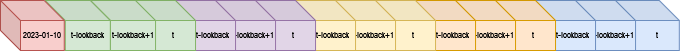
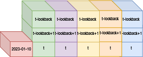
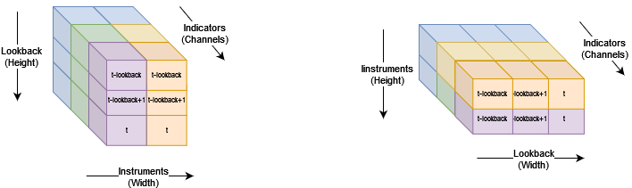

Overview of Gymfolio
GymFolio
Welcome to GymFolio, a specialized Reinforcement Learning environment designed for the dynamic field of portfolio optimization. GymFolio allows practitioners to create investment strategies for financial investment using Reinforcement Learning.
Built on Python, this environment provides a framework for training and evaluating various deep reinforcement
learning models like PPO, SAC, and DQN in the context of managing and optimizing financial portfolios. It is compatible
with most of the agents in the package Stable Baselines 3 and has
been tested with DQN, DDPG, PPO and SAC.
GymFolio offers a highly flexible environment that allows users to experiment with different reward mechanisms, as well as extend it to their own. Users can utilize traditional log returns, or incorporate other usual metrics from the industry such as the Sharpe ratio and tracking error to measure performance. GymFolio also integrates key financial concepts such as the risk-free rate, slippage, and transaction costs, which are crucial for creating realistic trading simulations and optimizing portfolio decisions avoiding usual pitfalls that invalidate promising strategies.
Usage example
An example of the usage of StableBaselines3 is provided in examples/ex_SB3.py.
It uses the data/example.h5 datasets in HDF5 format, which can be downloaded here.
Additional documentation is available here.
Installation
Gymfolio uses poetry for package management and installation. Clone the repository contents and run
pip install poetryif your python environment does not have it installed.In the same terminal, navigate to the project directory and input
poetry installThe example
examples/ex_SB3.pycan be run with the default parameters.
Base environment
The base environment class is located in envs/base/PortfolioOptimizationEnv, and it is built using OHLC data and an additional dataframe for
the state observations provided by the environment, such as, but not limited to prices, technical indicators or alternative timestamped data.
Parameters
df_ohlc:
pandas Dataframewith the Open, Close, High and Low prices at the desired granularity.df_observations:
pandas Dataframewith all the information used as observation of the environment.rebalance_every:
int, default = 1time between actions in consecutive time units in the series.rebalance_every = 4, for instance, would mean that every 4 available dates a new rabalancing decision will be made. A value of 1 is for continuous (daily in the default time units) rebalancing.slippage:
float, default = 0.005, price changes from the submission of the order to its fulfillment.transaction_costs:
float, default = 0.002, costs of placing an order.continuous_weights:
bool, default = False, should we consider the weights as continuous, based only on Close to Close price timeseries or split them in Holding weights, Buying weights and Selling weighs (More details in a follow-up section)allow_short_positions:
bool, default = False, enforce long-only portfolios (False) or allow short positions.max_trajectory_len:
int, default = 252, maximum time units for the trajectory.observation_frame_lookback:
intnumber of observations to return from the environment to take the next action.render_mode:
str, default=tilehow to return the state of the environment, either as avector``(1D), ``tile(2D) ortensor(3+D).agent_type:
streither discrete or continuous.convert_to_terminated_truncated:
booluse done (old Gym version) or truncated and terminated (new Gymnasium version compatible).
Environment behavior
Let’s assume that we have rebalance_every=5, return_observation_frame=True with continuous weights and a trajectory of 20.
The environment starts on 2023-03-06 and our first rebalancing date is 2023-03-06 +5 trading days = 2023-03-13, the next on the 2023-03-20.
An observation frame with dates
2023-03-07:2023-03-13is sliced from df_observations and return to the agent in the previousenv.step().The agent process the observations and submits an action, the new portfolio weights.
As the environment has continuous weights, no further processing is done to them.
Return and observation frames are extracted between the next available date from the rebalancing date (
2023-03-14for2023-03-13). The observation will be returned by the currentenv.step().The reward is computed as the weighed average return of each instrument for the time window between the effective date of the action (
2023-03-14) and the next rebalancing date (2023-03-20).Date trackers are updated and the environment checks if the trajectory has the maximum length of 10, or if there are no more available rebalancing dates in the history. If that is the case,
env.step()returnsdone=True, else the environment proceeds to the next interaction.
{kind=link}
Base reward
The reward provided is the log return between the effective rebalancing period and the previous rebalancing period.
Some additional considerations on how the return series is computed when continous_weights=False are explained
in section Weight and return processing
$$r_t = log(1 + P_t / P_{t-1})$$
TEST
where $P_t$ is the price of an asset at time t.
Then, as the agent decides through an episode, it collects subsequent $r_t$ rewards at each rebalancing date, with a discount factor $gamma$.
More sophisticated reward functions are in the children environments located in envs/custom, which have the Sharpe Ratio (SharpeEnv),
Sortino Ratio (SortinoEnv), Calmar Ratio (CalmarEnv) and Tracking error (TrackingErrorEnv).
Weight and return processing
Conventional usage of weights is done when the environment is initialized with continuous_weights=True. In this case, the returns are
the weighed average of the returns from the closing price of the previous rebalancing date, to the closing price of the current rebalancing date,
irrespective of the date being a holding date or a rebalancing date (thus modifying the weights the next day).
$r=vec{w}.cdot vec{frac{P_{Close,t}}{P_{Close,t-1}}}$
If continuous_weights=False, however, we can split the next weights (agent action) in three vectors.
{kind=link}
W buy are the weight increases (positive weight deltas) between consecutive rebalancings.
W sell are the weight decreases (negative weight deltas) between consecutive rebalancings.
W hold is the weight of the instrument that is not sold nor bought. It is the minimum value between the old and new weights for each instrument.
The implementation in detail can be found in src/envs/common.py decompose_weights_tensor.
Then, the returns for the frame between the effective action date and the rebalancing date, are computed
For all the dates except the effective action date, the returns are computed identically as in the continous_weights=True case.
For the effective action date, the return is the sum of three different return sources:
Buys: the return is computed as the ratio between the Close price and the Open price.
Sells: the return is computed as the ratio between the Open price, when it is sold and the last Close price.
Hold: the return is computed as the ratio of the Close price and the last Close.
{kind=link}
Observations
Gymfolio offers versatile options for configuring the observation space, which is derived from the subset of the last
lookback observations prior to the rebalancing date in the df_observations dataframe. This observation space can be
formatted as a 1D vector, a 2D matrix, or a tensor, providing flexibility in how the data is presented
to the reinforcement learning agent.
{kind=link}
Vector mode
In vector mode, the rows of the observation table are concatenated into a single 1D vector. This format is straightforward and compatible with various machine learning models, presenting all the observational data in a flat, linear structure. This method is particularly useful when the agent requires a simple, compact representation of the data, such as tree-based models or multi-layer perceptrons (MLPs).
{kind=link}
Tile mode
In tile mode, the observation table maintains its original shape, structured as a lookback x indicators matrix. This format is ideal for models that benefit from spatial or sequential representations of data, such as Recurrent Neural Networks (RNNs) or Convolutional Neural Networks (CNNs). By retaining the matrix structure, the environment provides a comprehensive view of the indicators over the lookback period, enabling the agent to detect patterns and temporal relationships effectively.
{kind=link}
Tensor mode
In tensor mode, the observation data is processed differently to accommodate more complex models. Indicators specific to individual investment instruments, such as the Money Flow Index (MFI) or Relative Strength Index (RSI), are identified using the multiindex of the pandas dataframe. These indicators are extracted to form a tensor I, with dimensions of instruments x lookback x indicators.
Additionally, global indicators that affect all instruments simultaneously, such as the Volatility Index (VIX) or interest rates, are extracted similarly. This global tensor G is then replicated across the number of instruments and concatenated with tensor I, resulting in the final observation tensor O.
{kind=link}
Unlike the traditional (height x width x channels) format used in CNNs for computer vision, Gymfolio returns the tensor as Channels x Height x Width or instruments x lookback x indicators. This arrangement ensures compatibility with high-level reinforcement learning libraries like StableBaselines3, allowing for seamless integration and utilization of advanced RL algorithms.
Other considerations
Risk-free rate: The return on an investment with zero risk, providing a baseline against which to measure other investments. It is used in variants like the Sharpe ratio environment.
Slippage: The difference between the expected price of a trade and the price at which the trade is executed. It is used in the
continous_weights=Truecase as a negative contribution in the returns of the first day. In thecontinous_weights=Falseit only impacts the buys and sales.Transaction costs: Expenses incurred when buying or selling securities, including commissions and fees. As with the slippage, t is used in the
continous_weights=Truecase as a negative contribution in the returns of the first day. In thecontinous_weights=Falseit only impacts the buys and sales.
Other environments
Tracking error environment
The tracking error environment replaces the reward by the tracking error between the portfolio returns and a series of reference returns, usually an index like the
SP500. Code is located in src/envs/custom/TrackingErrorEnv.
The tracking error is computed as the standard deviation between the portfolio returns and the reference returns.
This environment modifies the compute_reward and step methods of the environment class and adds one additional attribute:
df_reference: pd.DataFrame with the reference returns (tracked instrument).
Agents
The goal of Gymfolio is to provide the main building blocks and wrappers for portfolio optimization, that can be used and extended with low or high level implementations of RL agents using any python library (numpy, Tensorflow, PyTorch, PTAN or StableBaselines3).
Gymfolio is compatible with most of the Stable Baselines 3 agents, and has been tested with a subset of them both with discrete and continuous action spaces. Gymfolio also has been successfully used in training Decision Transformers, generating trajectories to train the agent offline.